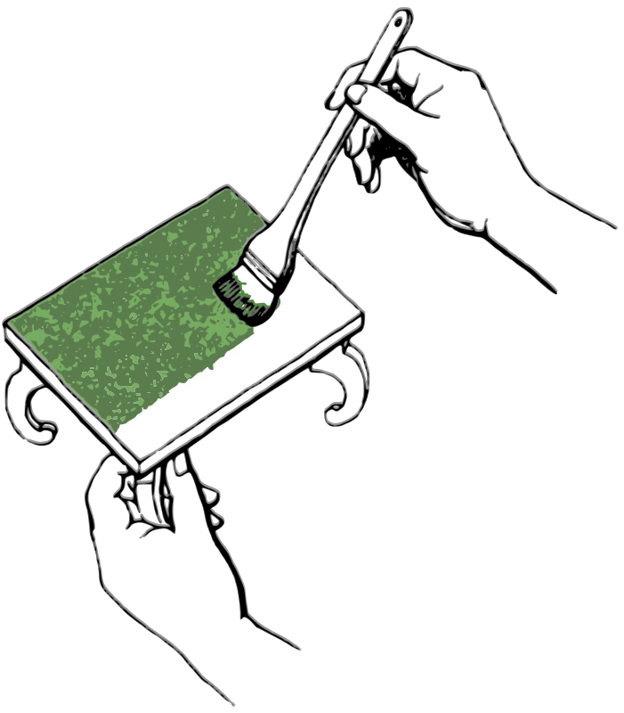

Chiar daca vei urma fiecare poteca a sufletului tot nu-i vei gasi hotarele, atat de adanc ii este logosul.(Heraclit)
O scurta introducere
Pasiunile si activitatile practicate cel mai des definesc imaginea unui om, dar si autenticitatea sa ca individ in cadrul societatii. Fiind un tanar dornic de a fi activ si in pas cu ritmul lumii contemporane, incerc sa-mi ocup timpul liber cu activitati si hobby-uri care sa ma dezvolte multilateral. Totusi, nu ezit sa caut in aceste indeletniciri obtinerea satisfactiei si armoniei spirituale. Consider ca practicarea unui hobby sau activitati extrascolare este absolut necesara pentru dezvoltarea personalitatii, deoarece aduce beneficii ca impunerea unei auto-discipline, dar si valorificarea din plin a creativitatii si talentelor in diferite domenii. Activitatile si hobby-urile practicate de mine
se impart in mai multe domenii, ele fiind:
Arte vizuale Sport Voluntariat Muzica